Отзывы на lamoda
Контекст
О компании
В интернет-магазине Lamoda.ru представлены лучшие коллекции женской одежды, обуви и аксессуаров, а также косметики и парфюмов ведущих мировых брендов.
Задача: увеличить количество отзывов
Отзывы о товаре помогают пользователям в выборе. Большое количество отзывов повышает доверие, подталкивает к покупке, как следствие, это увеличивает продажи. Наша цель - сделать так, чтобы пользователи оставляли информативные отзывы о товарах, делились впечатлениями, оставляли фотографии.
Research
Изучение нынешнего сценария
На данный момент в приложении всего одна точка входа в отзыв – через мои заказы.
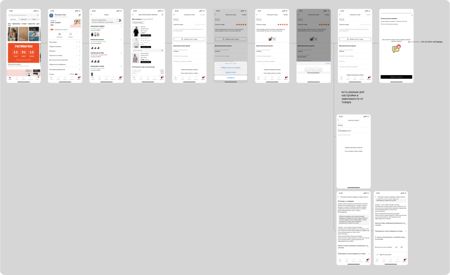
Бенчмарки
Обратилась к другим e-commerce сервисам и проанализировала их пути доведения покупателей к отзыву.
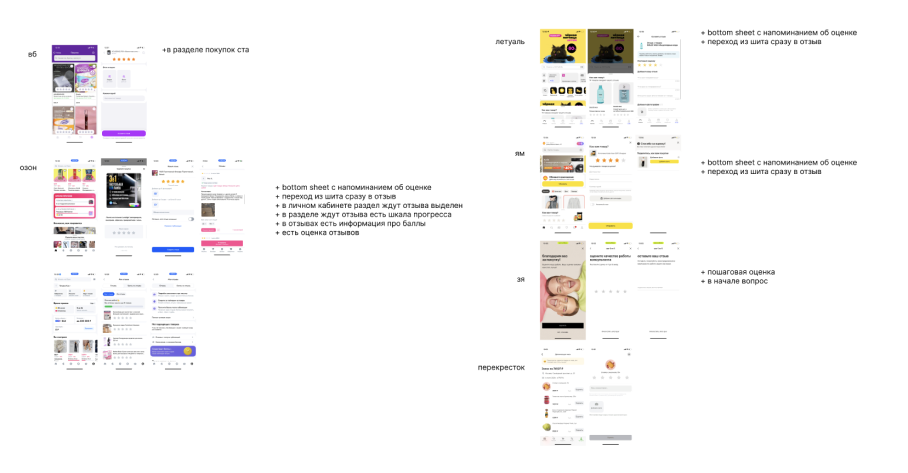
На этом этапе были выделены паттерны, которые используют сервисы, чтобы пользователи оставляли больше отзывов. В некоторых приложениях точек входа больше и путь оставления отзыва очевиднее.
Опрос пользователей
На основе полученных данных, были сгенерированы гипотезы, которые было решено проверить с помощью онлайн-опроса целевой аудитории.
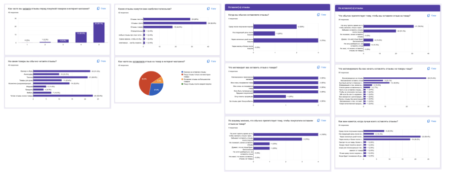
Выводы
1. Пользотватели считают более полезными отзывы с фото ✅
2. Напоминать об отзыве лучше через несколько дней после покупки ✅
3. Пользователи забывают оставить отзыв без напоминания ✅
4. Пользователи не понимают, зачем им оставлять отзывы ❌
5. Пользователи не хотят тратить время на то, чтобы оставить отзыв ✅
6. Пользователи не понимают, где можно оставить отзыв ✅❌
7. Некоторые пользователи не знают, что можно оставлять отзывы ❌
8. За вознаграждение отзывы будут появляться чаще ✅
Инсайты
• Иногда продавцы удаляют честные отзывы на свои товары, что демотивирует людей писать отзывы
• Список ранее оставленных отзывов - полезен
• Лучше иметь возможность оставить отзыв не только сразу после покупки, но и через некоторое время
• “Надавить на чувство важности”, информация о том, почему отзыв важен мотивирует людей их писать
• Пользователи хотят иметь возможность оставлять отзывы без регистрации
• Людям было бы полезно знать, что их отзыв помог другим людям
Поиск решения
Юзер-флоу
На основе подтвержденных гипотез и инсайтов, я построила юзер-флоу. Добавила больше точек входа в отзыв, напоминания, возможность дополнения отзыва спустя время.
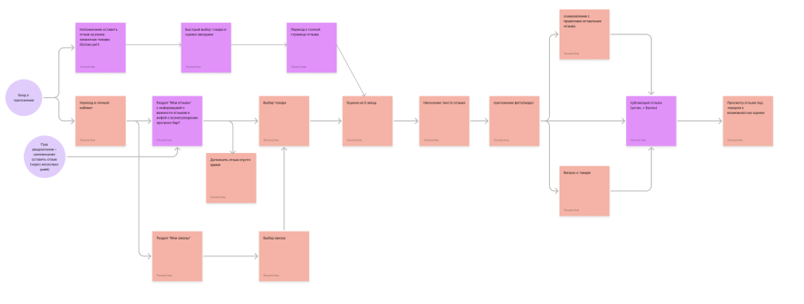
Первая версия макетов
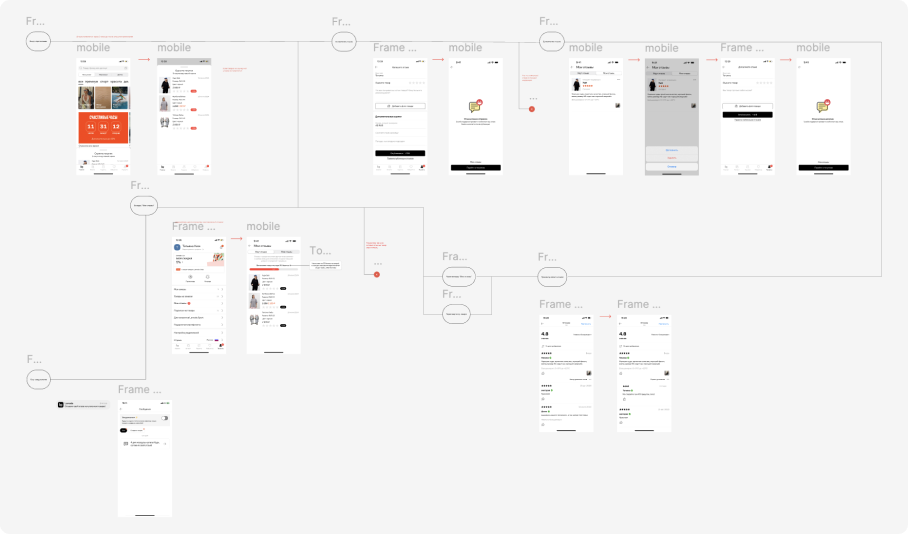
UX-тестирование
Проведен UX-тест на 4 респондентах.
Гипотезы
Пользователь поймет:
• Как оставлять отзыв на товары
• Где найти свои предыдущие отзывы
• Что можно дополнить свой отзыв спустя время
• Что за отзывы дают вознаграждение
• Что есть разные пути выхода на оставление отзыва
Задания и вопросы
• Вы зашли в приложение ламода, несколько дней назад вы совершили покупку. Посмотрите на экран и скажите, что вы видите?
• Как думаете что значит +10б?
• Вы хотите оставить отзыв на этот товар, что будете делать?
• Представьте, что после стирки 40 градусов худи село, что вы будете делать?
• Как вы думаете, как еще можно оставить отзыв на ранее купленный товар?
• Что еще могло бы вас сподвигнуть написать отзыв?
Скрины
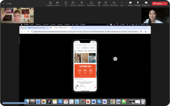
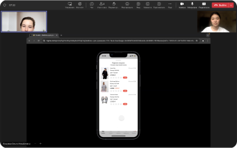
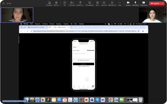
Выводы
На тестах выяснилось, что пользователи не понимают, почему дополненный отзыв скрыт, хотя он является более полезным.
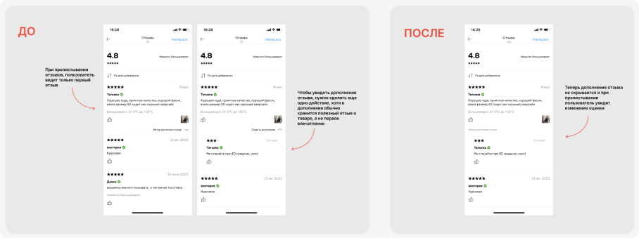
В остальном, пользователи понимают:
• Как оставлять отзыв на товары ✅
• Где найти свои предыдущие отзывы ✅
• Что можно дополнить свой отзыв спустя время ✅
• Что за отзывы дают вознаграждение ✅
• Что есть разные пути выхода на оставление отзыва ✅
После обсуждения со старшим дизайнером я внесла некоторые правки в UI.
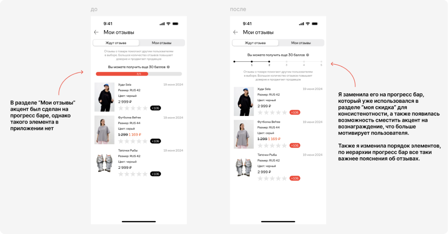
Итоговое решение
Было добавлено 3 новые точки входа, что увеличит конверсию в отзыв.
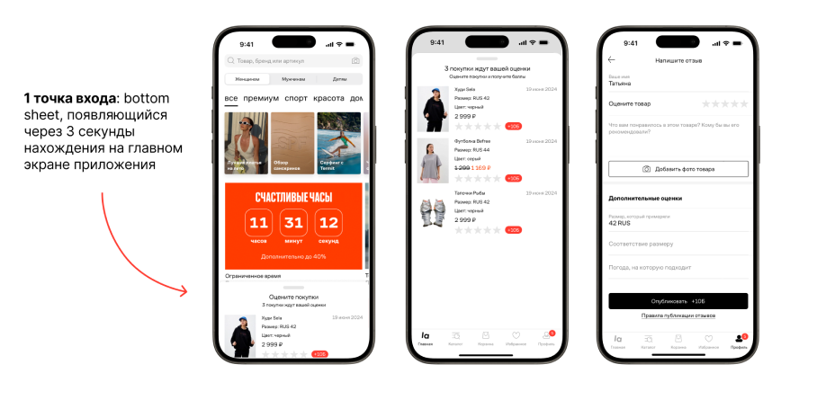
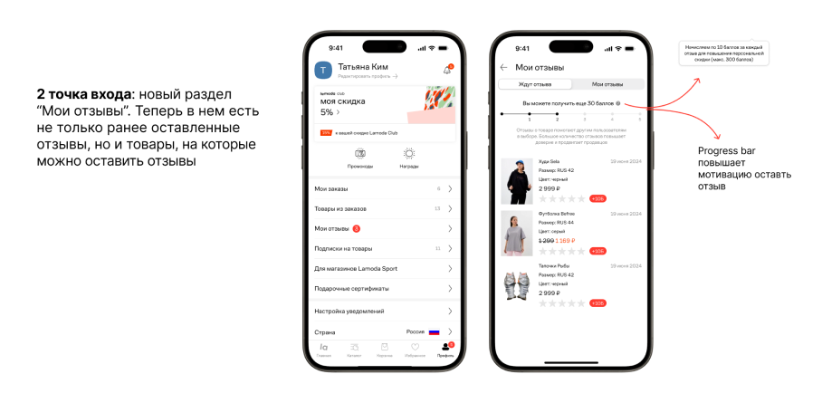
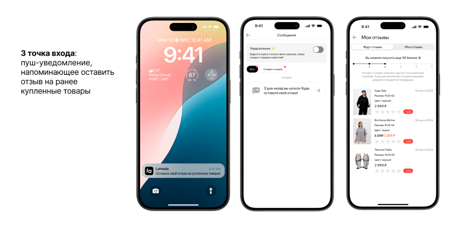
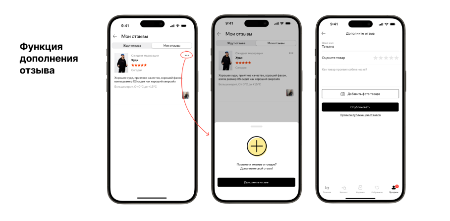
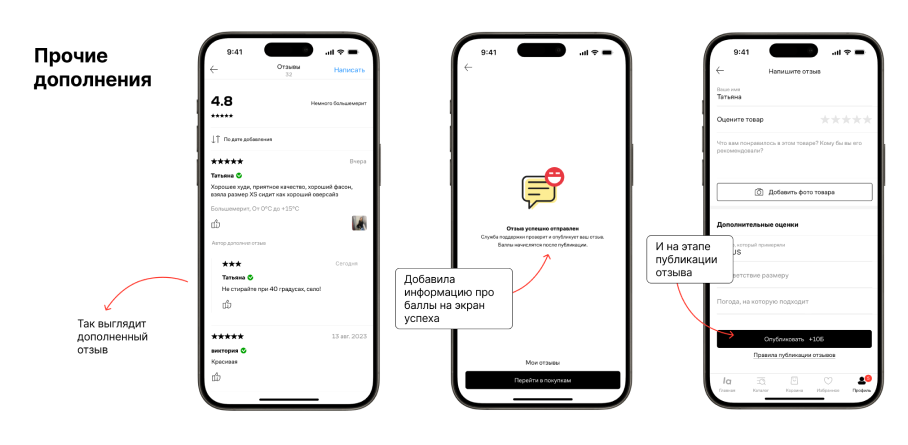